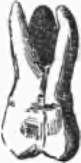

Characters Of Individual Teeth
Description
This section is from the book "The Human Body: An Elementary Text-Book Of Anatomy, Physiology, And Hygiene", by H. Newell Martin. Also available from Amazon: The Human Body.
Characters Of Individual Teeth
The incisors or cutting teeth (Fig. 42) are adapted for cutting the food. Their crowns are chisel-shaped and have sharp horizontal cutting edges which become worn away by use, so that they are beveled off behind in the upper row and in the opposite direction in the lower. Each has a single long fang. The canines (dog teeth) (Fig. 43) are somewhat larger than the incisors. Their crowns are thick and somewhat conical, having a central point or cusp on the cutting edge. In dogs and cats the canines are very long and pointed, and adapted for seizing and holding prey. The bicuspids or premolars (Fig. 44) are rather shorter than the canines and their crowns are cuboidal. Each has two cusps, an outer towards the cheek, and an inner on the side turned towards the interior of the mouth. The molar teeth or grinders (Fig. 45) have large crowns with broad surfaces, on which are four or five projecting tubercles which roughen them and make them better adapted to crush the food. Each has usually several fangs. The milk teeth differ only in subsidiary points from those of the same names in the permanent set.
Fig. 42. An incisor tooth.
Fig. 43. A canine or eye tooth.
Fig. 44. A bicuspid tooth seen from its outer side; the inner cusp is accordingly not visible.
Fig. 45. A molar tooth.
Enumerate the milk teeth in order. How many are there altogether? Number of permanent teeth? Enumerate in order. What permanent teeth replace the milk molars? What permanent teeth replace no milk teeth? Which are the wisdom teeth?
Describe an incisor tooth.
The Structure Of A Tooth
If a tooth be broken open a cavity extending through both crown and fang will be found in it. This is filled during life with a soft pulp, containing blood-vessels and nerves, and is known as the "pulp cavity." The hard parts of the tooth disposed around the pulp cavity consist of three different tissues. Of these, one immediately surrounds the cavity and makes up-most of the bulk of the tooth; it is dentine or ivory; covering the dentine on the crown is enamel, the hardest tissue in the body,* and on the fang the cement, which is a thin layer of bone.
A canine. Name animals with specially developed canines. For what do they use them? Give another name for a bicuspid tooth. Describe one.
Describe a molar tooth. What is the object of the projections on their crowns? How far do the milk teeth differ from the permanent in form?
What do we find on breaking open a tooth? What is it called? Why? What tissues form the hard parts of a tooth? Where does each lie?
The pulp cavity opens below by a narrow aperture at the tip of the fang, or at the tip of each fang if the tooth has more than one. Through these openings its blood-vessels and nerves enter.
Continue to: